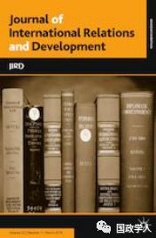
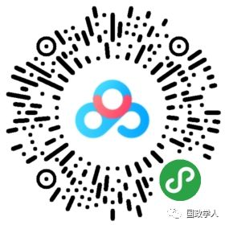

收录于合集

简 介
【作者】 Yooil Bae ， 越南富布莱特大学公共政策与管理讲师。
Yong Wook Lee ， 韩国高丽大学政治学和国际关系系教授。
【编译】 扎西旺姆
【校对】 李玉婷 高嘉琳
【来源】 Journal of International Relations and Development, 12, February 2019, pp 1-28, https://link.springer.com/article/10.1057/s41268-019-00169-5
【期刊网址】 https://doi.org/10.1057/s41268-019-00169-5
【期刊简介】 ** Journal of International Relations and Development** 创立于1984年，是专注区域研究的全球刊物，也是中欧与东欧国际研究协会的官方期刊。该期刊关注对国际关系和国际政治经济现有问题的理论及实证分析。

社会化的软实力： 重塑分析路径与公共外交
**** Socialised soft power: Recasting analytical path and public diplomacy **** ****
内容摘要
自约瑟夫奈首倡软实力概念以来，研究范围一直停留在探讨软实力重要性及软实力是否能脱离硬实力单独发挥效用等方面，而忽略了分析国家如何决定软实力来源这一关键问题，导致对软实力政策本质及内容的认识不足。本文将重新解读软实力的概念及分析方法，笔者认为软实力作为一种生产力，在国际认可和自我—他人身份认同（以下简称“自他认同”）的双向交流过程中发挥其影响力。作者以韩国官方援助政策中（ODA）的知识共享项目（KSP）为例，分析论证这一观点。
【关键词】发展援助 知识共享 生产力 公共外交 身份认同 软实力 韩国
文章导读
1
导言
约瑟夫奈提出的软实力一说因其概念不明确及作为政策手段的不实用性而饱受诟病。批评者认为，约瑟夫奈的观点不能从概念及分析的角度回答软实力是否能脱离硬实力独立发挥其作用，也没有厘清软实力的范围，机制及作用结果，笔者指出，这源于约瑟夫奈从理性主义框架来理解权力。本文将重建软实力的概念及分析框架，并阐明脱离硬实力的软实力如何帮助达成政策目标。
笔者认为，软实力是社会关系之中具有发散作用的生产力，强调政策接受者（受体）的主观意愿及自发性，将其作为衡量软实力效能的基准。国际认可和本国的自他身份认同相互作用，共同影响政府的公共外交决策。笔者将引用韩国政府发起并成功施行的KSP项目，例证软实力的双向作用过程在韩国经济发展模式外输道路的体现，从而凸显知识外交（knowledge diplomacy）的重要性。本文强调软实力与公共外交的目的在于通过向外国公众交流与社会化本国的价值观，创造可以产生吸引力的环境，而不是为了达成直接的政策结果。
2
软实力分析学
约瑟夫奈将软实力定义为，一个国家通过其文化，政治观念及政策的说服力与感召力，而非通过强制或利诱手段来获取结果的能力。将其与硬实力概念联系起来，硬实力是指与具体资源相关的强迫性权力，而软实力是与文化，意识形态和制度等抽象资源相关的吸引同化性的权力。 当前的软实力研究面临“软硬不可分”的概念模糊性及作为政策手段不实用的问题。笔者指出，这些问题源于分析框架的局限性。约瑟夫奈的理性主义权力说缺乏对分析框架的社会化重要性的认识，也没有理解其对自他认同及内生偏好形成过程的重要影响。由此笔者提出社会化中的自他认同这一双向交流过程，偏重分析软实力政策影响机制，并强调主体- 受体互动互惠过程中行为选择的自愿性。
社会化是软实力构建的关键因素。本文中的社会化是指发散性的集体共识改变机制，而非直接作用。笔者认为，任何模式或价值观想要需要吸引并同化受体，必须首先被受体所在的社会广泛认知和认可，如果受体不了解并不认可主体的软实力政策，软实力将无法发挥效用。约瑟夫奈也认可社会化的重要性，并提到吸引和说服都是社会构建的概念。
软实力很大程度上依赖于受体的意愿与自发性。尽管约瑟夫奈提出，软实力的吸引力取决于主体的实力及受体的认知结果，他还是没有足够认识社会化的影响力，这从其不断强调通过软实力达到预期结果，将软实力与直接行为效应联系起来可以看出。笔者指出，一旦软实力政策基于既定外交目的，就无“受体可以自愿选择”这一说。这从根本上，与受体内源性偏好及行为取向的概念相矛盾。
3 ****
自 我 他 人 认同分析框架
软实力与社会化和认知一致性关联密切。 笔者首先明确了软实力的概念，是社会关系中一种发散性的生产力。他提出的自他认同分析框架旨在通过软实力生产作用中的“社会化”来阐明主体- 受体之间的关系。这个过程中不涉及主体和受体的等级和社会地位，由此受体也更容易自发地对主体的价值观和行为表达同理心和支持。为了能通过“说服”（persuasion）对目标国政策（target state’s policy）产生影响，首先要让受体确认主体身份，即主体拥有明确的价值观，政策构想及其相关政策。为此，主体如何投射其吸引力资源及受体如何感知认识这一资源之间，需要有一定的一致性。在此分析框架之下，就可以进一步确定软实力资源，即只要该资源能吸引受体认可并模仿，无论是物质的或概念的，都可纳入软实力资源的范畴之中。反过来看，软实力的构成（自他认同过程）也必须先于软实力发挥的因果效应之前。总的来说，软实力的构成是指社会化的自他认同，受体在这一效用过程中至为关键。
区别于以受体为关键因素的自他认同，本文指出，自我认同是指使自己成为自我知识和行为的主体。不仅是主体对受体产生影响，受体作为软实力政策的关键，也影响了主体的身份定位及政策制定。比如在适应性模式当中，受他人对自己的期望驱动，主体的身份也会发生变化。这种“适应性”模型阐明了受体观点能影响主体预想政策的行为。对主体而言，通过与他人显著互动及正向反馈，可以强化自我身份和塑造新的自我认同。由此，自我认同与国家抉择软实力资源同样密切相连。在反馈机制的最后阶段，主体的自我认同也可能增加或减少对于接受者的吸引程度，但其不会在软实力反馈机制的一开始出现。
软实力并不仅仅是由主体掌控的，它取决于主体- 受体之间的关系与互动。除了国内外环境的影响之外，叙述（narrative），语言（linguistic）和情感(emotional)过程都可以帮助加深关系，加强吸引力。其中，情感交流和构建是实现软实力效应的关键一步，受体对主体的自我身份描述进行同理与情感交流，从而决定是否响应主体感召。由于这一互动过程中，政策制定方和接收方都会受到彼此动态的影响，所以也可以说这一过程的主体受体身份是在构成和规范他们关系的社会互动和反馈循环的过程中确定的。
**4
**
知识外交：韩国推行 KSP项目
韩国自1990年代开始着手海外援助计划，当时的主要形式为直接现金资助及少量的技术指导。然而由于援助接受国发展体系及管理模式的落后，直接的物质资助收效甚微。 在经历从“援助接受国转变为捐助国“的自我身份转型之后，韩国开始强调知识共享型的海外援助计划。这一历程与韩国成功经验的自他认同密不可分。国际环境的认可，接受国对于韩国发展经验的认同与支持都是促使韩国政府品牌化和推出韩国发展模式的关键因素。例如，部分发展中国家强烈要求向韩国政府进行政策咨询，利用各种渠道，如首脑会议，韩国大使馆和个别政府机构，寻求韩国对其发展项目的建议。而这些源源不断的正向反馈启发韩国政府将自身发展经验的力量视为吸引力源泉，并将重点放在较优势领域，由此才促成了韩国从援助接受国到捐助国的身份转型，并且不断调整其软实力外交政策。
**5
** 结 论
笔者认为，软实力公共外交的目的在于通过向外国公众交流与社会化本国的价值观，创造可以产生吸引力的环境，而不是为了达成直接的政策结果。确实，政策指定国可以将公共外交作为社会化受体从而达成其特定目标，这是合法的公共外交手段，但不能称之为软实力公共外交。只要公共外交成为实现特定目标的手段，就毫无受体的自主行为决策可言，从而也不属于软实力的范畴。笔者同时也展望了韩国KSP项目及韩国软实力政策的发展。他指出，韩国发展模式在接受国进行本土化改造十分必要。其次，知识外交需要在国际发展援助市场中不断创新。要实现这一目标，政府官员，专家，学术团体和民间社会行动者之间的互动网络需不断扩大，进行多点多面的深度参与。
本文由国政学人微信公众平台独家首发
** 扫描下方小程序码查看原文p df**

更多阅读
【地区秩序】阿米塔夫·阿查亚：权力转移还是范式变化？中国崛起与亚洲新兴安全秩序 | 国政学人
国政学人 （ID：guozhengxueren)
为方便学人及时阅读高质量文章
别忘把国政学人设置 星标 哦~